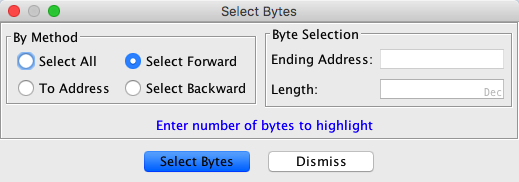
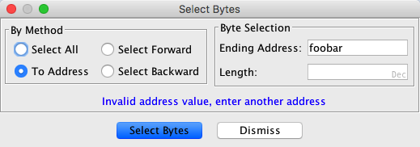

This tool allows the user to select a range of bytes starting from the cursor position.
 |
Select All:
Makes a selection that covers all of the bytes in a file.
To Address:
Makes a selection from current cursor position to a selected address, if the address exists. If the address is an invalid address, the user is prompted to select another address. If the address is outside of the current program's memory, the selection will contain bytes from the cursor position to the beginning or end of the program's memory.
Select Forward:
Default direction. Makes a selection of size n from the cursor position to n-1 number of bytes.
Select Backward:
Makes a selection of size m from the cursor position to m-1 number of bytes.
Ending Address:
Enter an appropriate address that will be either the ending address of the bytes (if the selected address is greater than the current address) or the starting address of the bytes (if the selected address is lower than the current address). This value may be in either hex or decimal
Length:
Enter an appropriate length (number of bytes to be contained in the selection) that will point to either the ending address of the bytes (if the selected address is greater than the current address) or the starting address of the bytes (if the selected address is lower than the current address). This value may be in either hex or decimal

This occurs only when an invalid address is entered. The user is prompted to enter a valid address.
Provided By: Select Bytes Plugin